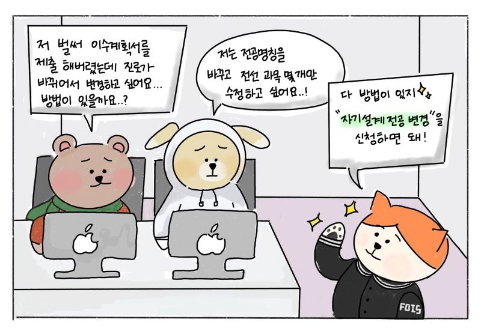
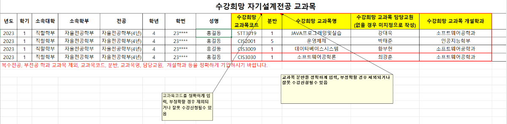

▶ 수강희망 교과목 신청

수강희망 교과목 신청은 자기설계전공 원활한 운영과 학생들이 설계한 교과목을 최대한 수강할 수 있기 위한 지원이야.
이 지원은 "전공설계" 과목을 이수하고 자기설계전공 신청서를 제출한 학생에게 한해 이루어져.
매 학기가 시작하기 전 학부사무실에서 공지가 올라올텐데 해당 기간 내에 위 사진의 엑셀 파일과 교과과정표를 제출하면 돼!
단, 우선수강 교과목 8과목(24학점) 안에서만 가능해! 또 수강희망 교과목을 제출하는 것이 무조건 수강신청 되는 것은 아니야.
그러니 전공신청서 적을 때 대충대충 적으면 안 되겠지? 1학년 때부터 열심히 진로 고민해서 신중히 작성해야 해!
P.S : [붙임 1]과 [붙임 2]를 참조해줘!
이 지원은 "전공설계" 과목을 이수하고 자기설계전공 신청서를 제출한 학생에게 한해 이루어져.
매 학기가 시작하기 전 학부사무실에서 공지가 올라올텐데 해당 기간 내에 위 사진의 엑셀 파일과 교과과정표를 제출하면 돼!
단, 우선수강 교과목 8과목(24학점) 안에서만 가능해! 또 수강희망 교과목을 제출하는 것이 무조건 수강신청 되는 것은 아니야.
그러니 전공신청서 적을 때 대충대충 적으면 안 되겠지? 1학년 때부터 열심히 진로 고민해서 신중히 작성해야 해!
P.S : [붙임 1]과 [붙임 2]를 참조해줘!
▶ 기존 전공
자기설계전공을 어떻게 짜야할 지 고민이라면 선배들이 해 놓은 길들을 참고해봐! 여러 전공들이 있으니 다양하게 생각해볼 수 있을거야.
물론 그렇다고 해서 선배들의 환경과 너희의 환경과는 다를 수 있으니까 참고용으로만 써줘!
P.S : [붙임 3]을 참조해줘!
물론 그렇다고 해서 선배들의 환경과 너희의 환경과는 다를 수 있으니까 참고용으로만 써줘!
P.S : [붙임 3]을 참조해줘!
▶ 자기설계전공 변경
자기설계전공 신청서를 제출한 이후 진로가 변경되거나 계획했던 것과 다른 전공을 넣고 싶으면 어떻게 해야 하냐고?
No No, Don't worry. 최대 1회 변경 가능하니까!! 6학기 이내에 1번 변경할 수 있으니 너무 걱정하지마.
전공심사 시기와 동일해. (5월/11월 공지, 6월/12월 제출, 7월/1월 승인)
전공명을 변경하려면 전공신청서를 재제출 한 후 재심의가 이루어져.
(기존전공 : 교수회의, 신규전공: 운영위원회)
교과과정을 변경하려면 지도교수님의 승인 후 교과과정 변경 사유서와 교과과정표(변경)를 제출해야해.
No No, Don't worry. 최대 1회 변경 가능하니까!! 6학기 이내에 1번 변경할 수 있으니 너무 걱정하지마.
전공심사 시기와 동일해. (5월/11월 공지, 6월/12월 제출, 7월/1월 승인)
전공명을 변경하려면 전공신청서를 재제출 한 후 재심의가 이루어져.
(기존전공 : 교수회의, 신규전공: 운영위원회)
교과과정을 변경하려면 지도교수님의 승인 후 교과과정 변경 사유서와 교과과정표(변경)를 제출해야해.
▶ 신규 전공명
기존에 있는 전공명칭 중에서 자기가 생각한 전공이랑 맞지 않는 경우가 있으면 새로운 전공 명칭을 만들 수 있어!
다만 기존에 없는 새로운 전공명을 만들어야 하기 때문에 전공심사 이후 한 번 더 심사가 이루어져야 해.
이때 등장하는 것이 바로 운영위원회야. 운영위원회는 우리 자율전공학부 지도교수님들과 외부 교수님들까지 포함 될거야.
그리고 전공발표를 영상으로 대체했던 전공심사와는 달리 이번엔 직접 발표를 진행하게 될거야. 조금 떨리겠지?
하지만 걱정하지마. 너희가 4년동안 해왔던 것을 토대로 교수님들께 너희의 전공을 알려드린다고 생각하면 돼!
약 10 ~ 15분 가량의 발표 후 질의응답까지 무사히 마친다면 추후 전공심사 결과에 대해 공지가 올라올거야.
그 때 명단에 있으면 통과! 만약 안 되었다면... 아쉽지만 다음 전공심사를 기대해봐야지. ㅠ.ㅠ
다만 기존에 없는 새로운 전공명을 만들어야 하기 때문에 전공심사 이후 한 번 더 심사가 이루어져야 해.
이때 등장하는 것이 바로 운영위원회야. 운영위원회는 우리 자율전공학부 지도교수님들과 외부 교수님들까지 포함 될거야.
그리고 전공발표를 영상으로 대체했던 전공심사와는 달리 이번엔 직접 발표를 진행하게 될거야. 조금 떨리겠지?
하지만 걱정하지마. 너희가 4년동안 해왔던 것을 토대로 교수님들께 너희의 전공을 알려드린다고 생각하면 돼!
약 10 ~ 15분 가량의 발표 후 질의응답까지 무사히 마친다면 추후 전공심사 결과에 대해 공지가 올라올거야.
그 때 명단에 있으면 통과! 만약 안 되었다면... 아쉽지만 다음 전공심사를 기대해봐야지. ㅠ.ㅠ